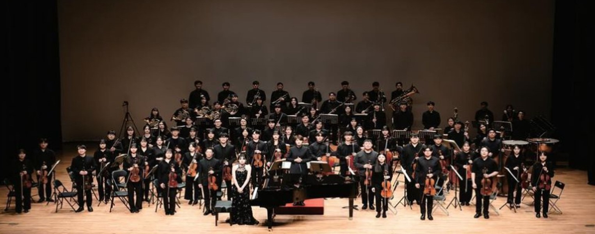
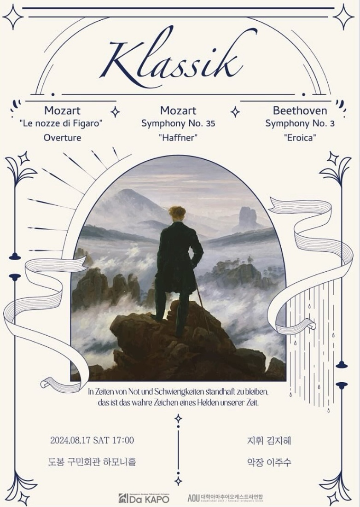
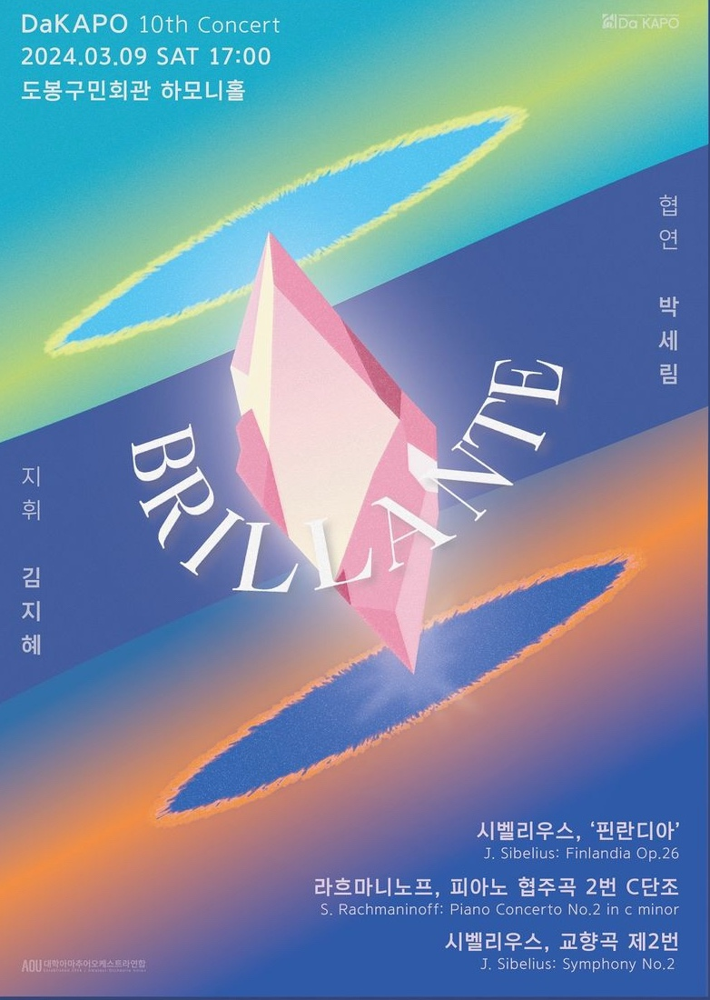
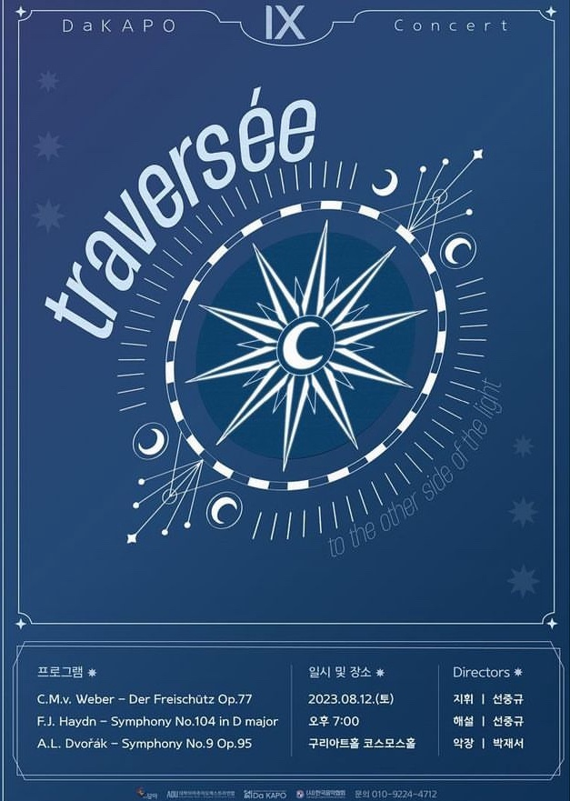
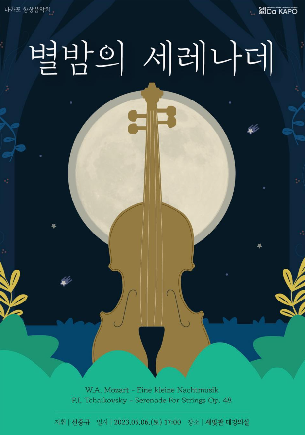
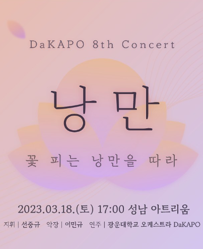

“처음부터”라는 의미를 담아, 초심을 잃지 않고 음악에 대한 열정을 이어가는 동아리
광운대학교 아마추어 오케스트라 DaKAPO는 이름처럼 “처음부터”라는 의미를 담아,
초심을 잃지 않고 음악에 대한 열정을 이어가는 동아리입니다.
2017년에 창단된 이후 현재까지 꾸준히 정기 연주회를 개최하며,
단원들의 노력과 헌신을 통해 매년 아름다운 하모니를 선보이고 있습니다.
DaKAPO는 베토벤의 명언인 “고난과 시련의 시기에서 흔들리지 않는 것. 이는 이 시대의 진정한 위인의 증거이다.”에 깊이 감명받아,
음악을 연주하며 겪는 도전과 시련 속에서도 흔들리지 않는 열정을 실천하고자 합니다.
수많은 노력이 쌓여 하나의 곡을 완성해 나가는 과정 속에서,
단원들은 음악이 지닌 순간의 소중함과 그 깊이를 경험하고 있습니다.
과거가 있기에 미래가 존재하듯, 고전 속에 담긴 이야기들을 연주하는 DaKAPO는
관객들에게 음악을 통해 시간과 공간을 초월한 감동을 전하는 오케스트라입니다.
“처음부터”라는 의미를 담아, 초심을 잃지 않고 음악에 대한 열정을 이어가는 동아리
광운대학교 아마추어 오케스트라 DaKAPO는 이름처럼 “처음부터”라는 의미를 담아,
초심을 잃지 않고 음악에 대한 열정을 이어가는 동아리입니다.
2017년에 창단된 이후 현재까지 꾸준히 정기 연주회를 개최하며,
단원들의 노력과 헌신을 통해 매년 아름다운 하모니를 선보이고 있습니다.
DaKAPO는 베토벤의 명언인 “고난과 시련의 시기에서 흔들리지 않는 것. 이는 이 시대의 진정한 위인의 증거이다.”에 깊이 감명받아,
음악을 연주하며 겪는 도전과 시련 속에서도 흔들리지 않는 열정을 실천하고자 합니다.
수많은 노력이 쌓여 하나의 곡을 완성해 나가는 과정 속에서,
단원들은 음악이 지닌 순간의 소중함과 그 깊이를 경험하고 있습니다.
과거가 있기에 미래가 존재하듯, 고전 속에 담긴 이야기들을 연주하는 DaKAPO는
관객들에게 음악을 통해 시간과 공간을 초월한 감동을 전하는 오케스트라입니다.





2017 다카포 창단 · 창단 연주회
2017.02.14 초대회장 | 임가현
2017.08.31 회장 | 임가현 악장 | 조승윤 지휘 | 안민호
2018 제 2 · 3회 연주회
2018.03.09 회장 | 이정윤 악장 | 조승윤 지휘 | 안민호
2018.10.31 회장 | 강지수 악장 | 정유섭 지휘 | 최광희
2019 제 4 · 5회 연주회
2019.05.03 회장 | 임민영 악장 | 이민규 지휘 | 최광희
2019.10.31 회장 | 임민영 악장 | 맹채윤 지휘 | 최광희
2022 제 6 · 7회 연주회
2022.02.11 회장 | 안희범 악장 | 이민규 지휘 | 정예진
2022.08.13 회장 | 안성현 악장 | 전지유 지휘 | 선중규
2023 제 8 · 9회 연주회
2023.03.18 회장 | 박서현 악장 | 이민규 지휘 | 선중규
2023.08.12 회장 | 박서현 악장 | 박재서 지휘 | 선중규
2024 제 10회 연주회
2024.03.09 회장 | 심승우 악장 | 박채서 지휘 | 김지혜
2024.11.04 회장 | 김태민 악장 | 이주수 지휘 | 김지혜